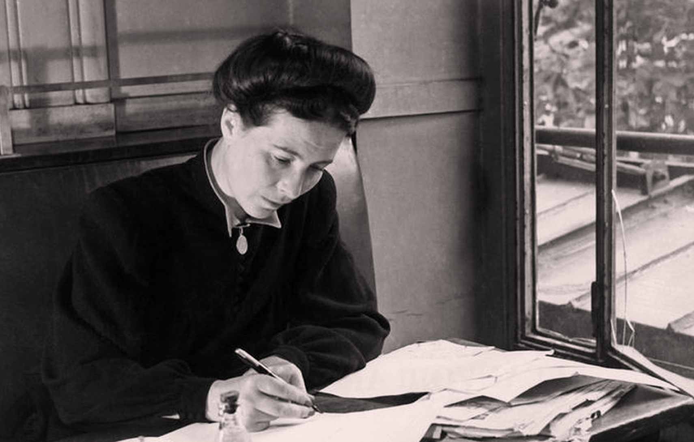

| Incio | Logros | Galería | Contacto |
Sus Logros |
|||
|  | |||
Simone de Beauvoir’s contributions to humanity center primarily on her groundbreaking work in feminist philosophy and her influence on existentialist thought. In The Second Sex (1949), she exposed the social, cultural, and historical mechanisms through which women had been subordinated, famously asserting that “one is not born, but rather becomes, a woman.” Her analysis reframed gender as a social construct rather than a biological destiny, laying the intellectual foundation for modern feminist theory. Her work challenged deeply entrenched norms and inspired movements for gender equality across the world, making her one of the central figures in the struggle for women’s rights in the 20th century. Beyond feminism, de Beauvoir made significant contributions to ethics, literature, and political thought. As a key figure in existentialism, she explored themes of freedom, responsibility, and oppression, emphasizing the importance of individual agency in confronting injustice. Through her novels, memoirs, and essays, she offered nuanced reflections on aging, morality, and human relationships, influencing generations of readers and thinkers. Her lifelong commitment to activism—supporting anti-colonial struggles, human rights, and social reforms—further solidified her legacy as an intellectual who not only interpreted the world but also sought to transform it. |
|||